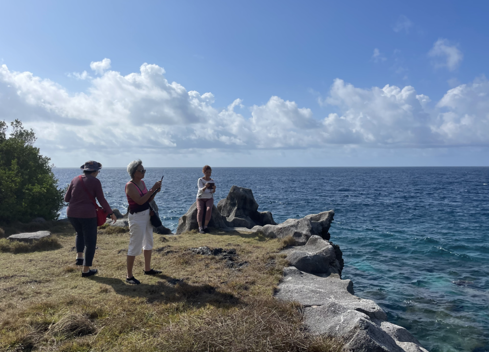
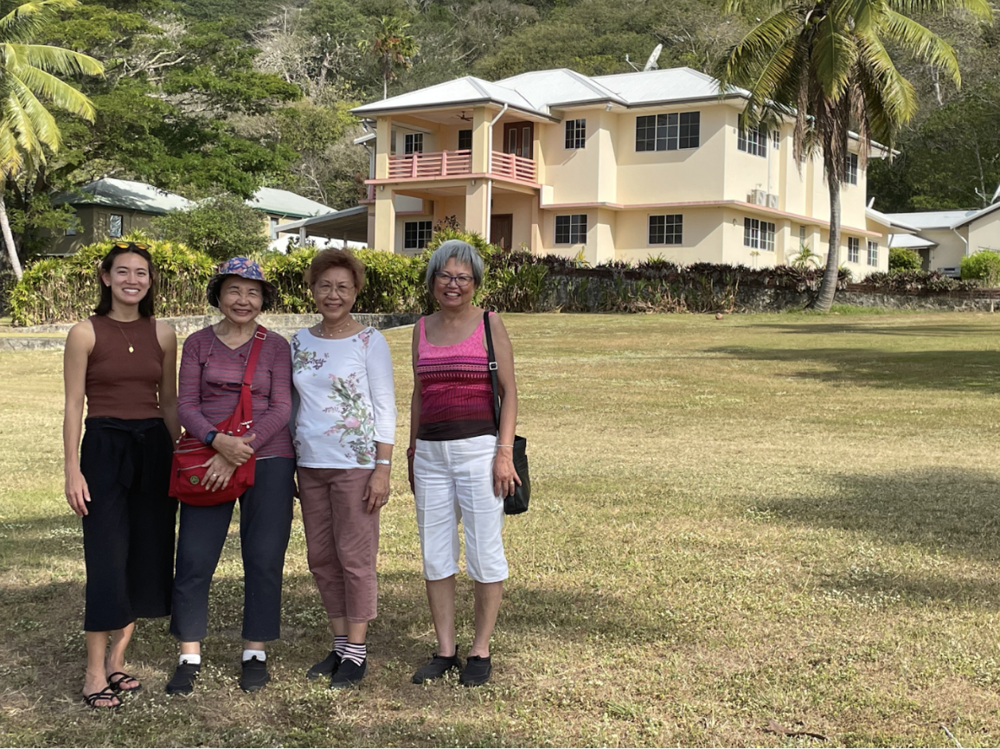

View the Zine


1. Marg Neal, We Were the Christmas Islanders (Australian Capital Territory: Bruce Neale, 1988), 207.↩
2. Neal, We Were the Christmas Islanders, 102.↩
3. Neal, We Were the Christmas Islanders, 90 and 118.↩
4. Neal, We Were the Christmas Islanders, 102.↩
(left to right) Foo Kam Lan, Linda Han, and Peggy Wong at the Sitting Room. August 2023
The first thing I noticed is that Uncle Chong doesn’t call his hometown South Point. He calls it 八厂– Camp 8. “There were nine total,” he recalls. “I still remember walking to Camp 9 to catch the train to school.”
Today, besides Camp 8 / South Point, only Camp 4, the present-day Pink House, and Camp 5, near Grant’s Well, remain. The need for nine camps becomes evident when you try to imagine constructing a railway from town all the way to the island’s southernmost point in the early 20th century. When 800 acres of high-grade ore were discovered at Christmas Island’s southern point in 1910, the primary mode of transit across the island was still foot, and “a few ponies [kept] by the Manager’s family.” A railway was necessary to make mining the phosphate profitable. The nine camps progressing south served as bases for workers laying the rail that would sustain a South Point population and the island’s economy. This railway was so important that it is commemorated in the 1963 2c stamp of Christmas Island.
Industrial Bones, Human Heart
Though South Point began as humble Camp 8, it quickly grew into “the Island's most significant residential area,” which it remained from the 1920s until phosphate reserves there diminished in the 1960s and 70s. Much of what’s written about South Point documents its industrial history, like the construction of the crushing plant still visible by the remaining railway station. The physical structures that survive today similarly testify to an industrial history: besides power lines, the crushing plant, a water tower, some concrete foundations, and a long retaining wall, little remains of South Point’s physical structures.
(left to right) Stephanie Niu, Foo Kam Lan, Peggy Wong, and Linda Han in front of the old island manager’s house. August 2023. Photo by James Pan.
One of the first South Point / 八厂 photos Uncle Chong shared with me was indeed of the crushing plant, but I didn’t recognize the iconic building at first. The crushing plant, usually represented in archives as a hulking stone wall photographed from afar, was shown close-up. What I see first is not the crushing plant but the children: a row of Chinese girls and boys beaming open-mouthed at the camera, their hair blowing in the wind, the boys with white collared shirts tucked into their shorts, the girls with spotted and checkered dresses flowing about their knees.
Photo captioned “Ah Pay and Family, 1949” in the Chinese Literary Association Heritage Museum.
Uncle Chong’s memory of 八厂 feels like this photograph; though the presence of phosphate and mining is structural, holding the memories up, the industrial elements take a back seat to the vibrance of South Point’s inhabitants, the township’s true heart.
Photo captioned “Ah Pay and Family, 1949” in the Chinese Literary Association Heritage Museum.
Tapioca & Dogs: Chong Yoke Kwang’s Panoramic Maps
In a series of detailed maps, Uncle Chong (Chong Yoke Kwang) has represented for the first time a colorful spatial record of daily life in South Point in the 1950s. Coming to Christmas Island at age four in 1954, Uncle Chong lived in 八厂until he was relocated to Drumsite in 1972. He lived on Christmas Island until 1975, when he went to work in Perth and eventually Queensland.
His drawings, characterized by a keen eye to architectural detail, match existing documents of South Point’s general layout: one main road ran parallel to an elevated rail track, the two connected by a series of steps. Most families lived in single-story residences, five to a block, save for the notable double-story building marked on maps and a few free-standing houses. The railway brought phosphate, people, and weekly Saturday supplies like meat and ice to the otherwise isolated town, earning it the nickname “pork train.”
Children outside 40 houses in Settlement. 1968. Photo credit to Berri Wan.
Like his photograph of the crushing plant, what astonishes me about Uncle Chong’s maps are not the structures but the life happening in and around them. In these maps, 八厂 bustles with simple figures animated in daily life across a horizontal, almost cinematic panel. His drawing style is reminiscent of Emakimono, a Japanese painting style from the Nara period. Like these classical paintings of narrative sequences with small figures placed across a long horizontal scroll, Uncle Chong’s maps unspool in a panorama, a story come to life.
The first map (Figure 1) contains both Uncle Chong’s house and himself and is packed with personal details depicted colorfully, with love. The “Chong Family” house, second from the right, is auspiciously labeled “合家出入平安”: Whole Family Passes Through in Peace. Along the short steps up to each residence, people lounge, fly paper airplanes, and stop to chat. In the street, children fly kites, jump rope, ride bikes, and even carry a fresh catch of fish home. The green car parked at the end of the lane is Chong’s brother’s Land Rover, which he fondly remembers. In the 1950s and 60s on the island, Land Rovers and Range Rovers were the car of the day: “Back then we didn’t have Hiluxes and all those cars,” a long-time Islander confirms. “We used Range Rovers, Land Rovers.” In our conversation, the green Land Rover is the one object Uncle Chong mentions more than any other; it also appears in both maps he’s drawn of the main drag (Figures 1 and 2). Perhaps, in addition to being a reminder of cars of the 1950s and 60s, the Land Rover is a reminder of Chong’s late older brother, a small piece he can immortalize on paper.
Chong’s maps of South Point are abundant not just with social activity but with plant and animal life. The trees blooming in front of his block bear tiny orange fruits, which he confirms are chili. “Very sweet,” he recalls. “They turn orange when ready.” Next to a row of three rope-skipping girls are two figures bent over tables and a woman pounding something in a mortar and pestle. “It’s my brother and me grinding tapioca to feed the chickens for our beloved mum,” Uncle Chong explains. In a photo of the brothers grinding the same tapioca in 1973, you can see the same bracket-shaped tables and the same two boys bent over their work.
Perched around them in the image are both a dog and a cat, pets that abounded in the 1950s before they were removed from the island to protect endemic species and their import eventually banned completely in 1973. Indeed, the first thing long-time Islanders often ask me upon returning to the island is, “Where did the dogs go?”
Further down Uncle Chong’s map, in front of the rock wall, gardens twist up in orderly rows for harvest. Uncle Chong recalls his mum’s vegetable garden including long beans, short beans, choy sim, kai choy, banana trees, and eggplants. Between the two blocks, a tree heavy with jackfruit hangs over all the activity. The precision with which Chong Yoke depicts family houses, cars, fruit trees, garden plants, and even acts of labour in his maps show that, more than the physical structures that housed South Point residents for so many decades, these daily rituals and gatherings were what made up life.
Wild Fruit & Wild Games: Life and Recreation
As Uncle Chong’s maps show, South Point in the 1950s and 60s was a bustling town. Like the township around Flying Fish Cove, South Point had an open-air cinema playing movies in English, Mandarin, Malay, Cantonese, and Tamil. Drumsite residents would occasionally ride open-air passenger trains, called the “Picture Train,” down to the South Point on Saturday to catch the movie. The town even had its own night school for Chinese language education, which ran five days a week for two hours each night. The Chinese school ran for three years until the government shut it down in favour of combined language education in the Drumsite and George Fam schools; but not before South Point residents held a closing party for the school near the basketball courts, with all teachers and pupils packed in.
Organized sports, like the basketball teams 晨星 (Morning Star) and 金鹰 (Golden Eagle) formed. Multiple South Point residents recall the joy of playing badminton and basketball as children. Although South Point children generally didn’t have toys, they found ways to create fun and joy from the mountains and bush around them.
Ah Lin Tan, who lived in South Point for years before she moved to Poon Saan to work as a draftsperson, recalls a favorite activity during the summer holidays. “We would get a bunch of hessian bags (canvas bags) and wear the oldest clothes we could find.” Once changed and ready, they lined the hessian bags under mango trees so laden with fruit that even their small arms could reach. “We would just pull the mangoes down. We didn’t even have to stand up to get them.” After eating their fill, the children would start chucking the mangoes at each other, slipping around on the hessian bags and dirtying the old clothes they had so diligently prepared, until four o’ clock neared and they needed to rush home before their parents returned from work.
Mango wasn’t the only fresh food in abundance. Amongst just fruit, the list of what South Point residents recall finding inludes custard apple, guava, mango, lychee, lime, lemon, pomelo, durian, jackfruit, and cherries, in addition to an abundance of papaya and banana. Vegetables that grew along gardens and in the bush included sweet potato, cassava, pumpkin, bitter melon, cherry tomatoes, and sugar cane. South Point was minimally connected to town; the Saturday train brought ice once a week, which had no chance of lasting the week in tropical conditions. Most families lacked refrigeration and instead ate from their garden and from the jungle. As Uncle Chong puts it: “You want to eat something? You go to the bush and get it.”
Finding food required a combination of foraging and exploring the edges of residents’ gardens. “We kids said if it’s a meter away from the garden, it’s free for all,” Ah Lin recalls. Though the children’s jurisdiction may not seem very generous, the spirit of this rule was considerate: “People still need their gardens.” And when it came to wild plants, like almonds that three children had to pound with rocks in order to extract even a sliver the size of half their finger, the children had tried-and-true methods. “We’d feed it to the chooks first. If they can eat it, we can eat it.”
Detail from Figure 6: two mango trees outside of the old South Point police station.
Gardens were not the only place children probed the boundaries of wilderness and civilization. After a heavy rain, gravel pushed along the main road by bulldozers would turn to mud. Here, Ah Lin and friends took the same poor hessian bags that supported their mango cavorting and turned them into sleds, sliding down the slick hillside into the steep ravine below. “We never felt we were in danger,” Ah Lin remembers. “At one o’clock, when all the mums were asleep, that’s what we would do.”
Perhaps this play that flirted with danger was a reflection of the South Point environment. Much of childrens’ recreation involved the natural landscape, whether mangoes, rain-slick mud, or seasonal cherries. “Since we didn’t have toys, when any shipment came we would save the planks from the wooden boxes” Chao Yoke Meng, a former South Point resident, recalls. “We’d draw the shape of a gun and saw it out and add a rubber band in there. Then we’d get some wild cherries, and the seeds would be the bullets.” Cherry guns, as this game was fondly called, required not only clever resourcefulness but also seasonal knowledge. “We loved to play cherry guns when the special tree was in season,” Choo Wai Chee, a former South Point resident, recalls, “but we would get the cane if my Dad caught us doing that game. It was dangerous for the eyes.” I like to imagine Meng, Wai Chee, and their friends exploring South Point as kids, pulling fruit off trees and eating them in fistfuls to replenish their supply of “bullets” for the next round, ready to make the wild cherries fly.
Detail from Figure 2: “Boys and girls playing a running game” from one end of the main drag to the other. Description from Chong Yoke Kwang.
Although the physical remnants of life at South Point have all but vanished, the spirit of South Point is still alive today. As phosphate reserves began to run out in the late 1960s, the British Phosphate Commission prepared to relocate South Pointers into the township. The new neighborhood they built needed to accommodate not only the large Chinese population in higher-density housing but their lifestyle, including facilities like community centers, public spaces for sport and learning, restaurants, and of course, an open-air movie theater. That movie theatre, preserving a cornerstone of South Point social life in the township, is the only surviving open-air movie theatre on the island today.
Today’s Poon Saan, whose Singapore-style blocks were originally built to house relocated South Point residents, is still the recognizable heart of the Chinese community. And like South Point, Poon Saan’s industrial origins belie a human heart. Sitting on a metal chair at mid-morning outside Poon Saan Coffee Shop, watching uncles and aunties chat over kway teow or wander over for a smoko at the union office all within the same block, I wonder if today’s Poon Saan reflects how South Point would feel if it were still around. Before I can decide, Uncle Albert comes up to ask me if I want some rocket and lettuce from his garden around the corner.
I’m used to thinking upon South Point with longing to know what has already been lost. But perhaps keeping a place alive is less about preserving its physical structures from unforgiving jungle and more about preserving a way of life. What it means to be a mine worker on Christmas Island has changed so much over the years; the union office and memorial in Poon Saan are testament to only a part of the story of workers’ ongoing struggle and victories through collective action. And though today’s Poon Saan doesn’t boast the same chili trees, basketball teams, and wild cherries that characterized street life in South Point, the spirit of collective care, whether through sharing homegrown lettuce or campaigning for working rights, persists. As I wrap Uncle Albert’s greens to take home, I like to imagine that this generosity is a bit of the original spirit of South Point living on. I feel lucky to be part of it.
Detail from Figure 2: Boy carrying a fish home.
This article was originally published in The Islander. To comment on this story or share your own memories of the Island, reach out to niustephanie@gmail.com.
1. Marg Neal, We Were the Christmas Islanders (Australian Capital Territory: Bruce Neale, 1988), 207.↩
2. Neal, We Were the Christmas Islanders, 102.↩
3. Neal, We Were the Christmas Islanders, 90 and 118.↩
4. Neal, We Were the Christmas Islanders, 102.↩